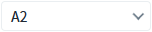
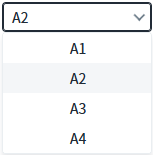
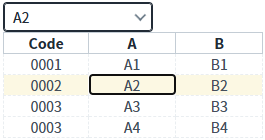

AutoComplete의 'getSelectedRow' 메소드를 사용하여 선택된 항목의 정보를 JSON 형식으로 반환받는 예제입니다.
목록 구성을 'gridViewItemset'으로 설정하면 반환되는 데이터 구조가 다르므로, 로직을 작성할 때 주의가 필요합니다.
기본 유형 AutoComplete의 선택 항목 정보 받기
GridViewItemset 유형 AutoComplete의 선택 항목 정보 받기
1
STEP 1: 초기 상태 확인하기
예제 영역 '목록 유형: 기본형' 아래에 구성된 AutoComplete 컴포넌트의 초기 선택 값은 '대한민국'입니다.Image 1.브라우저(Chrome) 실행 예시

목록 확장 아이콘을 클릭하여 목록의 유형을 확인합니다. 기본 유형으로 구성됩니다.
Image 2.브라우저(Chrome) 실행 예시

2
STEP 2: 선택된 항목의 정보 받기
'선택 항목의 정보 받기 - 기본형' 버튼을 클릭합니다.3
STEP 3: 실행 결과 확인하기
선택된 항목의 'label'과 'value'에 설정된 값이 JSON 형식으로 반환됩니다.
영역 '로그 확인'에 출력된 로그를 확인합니다. (브라우저의 개발자 도구 콘솔에도 로그가 출력되며, 반환된 객체를 확인할 수 있습니다.)
Example 1.Log
[15:30:53] # AutoComplete - 기본형 | 메소드 getSelectedRow 호출 값
[15:30:53] {"label":"A2","value":"0002"}1
STEP 1: 초기 상태 확인하기
예제 영역 '목록 유형: GridView' 아래에 구성된 AutoComplete 컴포넌트의 초기 선택 값은 '대한민국'입니다.Image 3.브라우저(Chrome) 실행 예시
목록 확장 아이콘을 클릭하여 목록의 유형을 확인합니다. 'gridViewItemset' 유형으로 구성됩니다.
Image 4.브라우저(Chrome) 실행 예시

2
STEP 2: 선택된 항목의 정보 받기
'선택 항목의 정보 받기 - gridViewItemset' 버튼을 클릭합니다.3
STEP 3: 실행 결과 확인하기
선택된 항목의 GridViewItemSet 설정된 값이 JSON 형식으로 반환됩니다.
영역 '로그 확인'에 출력된 로그를 확인합니다. (브라우저의 개발자 도구 콘솔에도 로그가 출력되며, 반환된 객체를 확인할 수 있습니다.)
Example 2.Log
[15:31:45] # AutoComplete - gridViewItemset | 메소드 getSelectedRow 호출 값
[15:31:45] {"columnInfo":["code","col_a","col_b"],"data":["0002","A2","B2"]}컴포넌트의 'getSelectedRow' 메소드를 사용하여 스크립트를 작성합니다.
Example 3.Script
// 예시) AutoComplete "acb_exam1"의 선택된 항목의 정보를 반환받습니다. // 이 메소드는 목록 구성 방식에 따라 반환값이 다릅니다. var jsnResult = acb_exam1.getSelectedRow(); // return 예시 1) 목록 유형이 기본형(itemSet)으로 설정. // {"label":"A2","value":"0002"} // return 예시 2) 목록 유형이 'gridViewItemset'으로 설정. // {"columnInfo":["code","col_a","col_b"],"data":["0002","A2","B2"]}
getSelectedRow